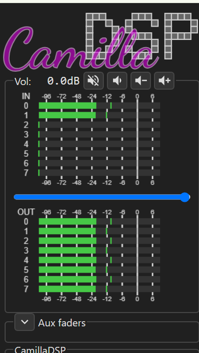
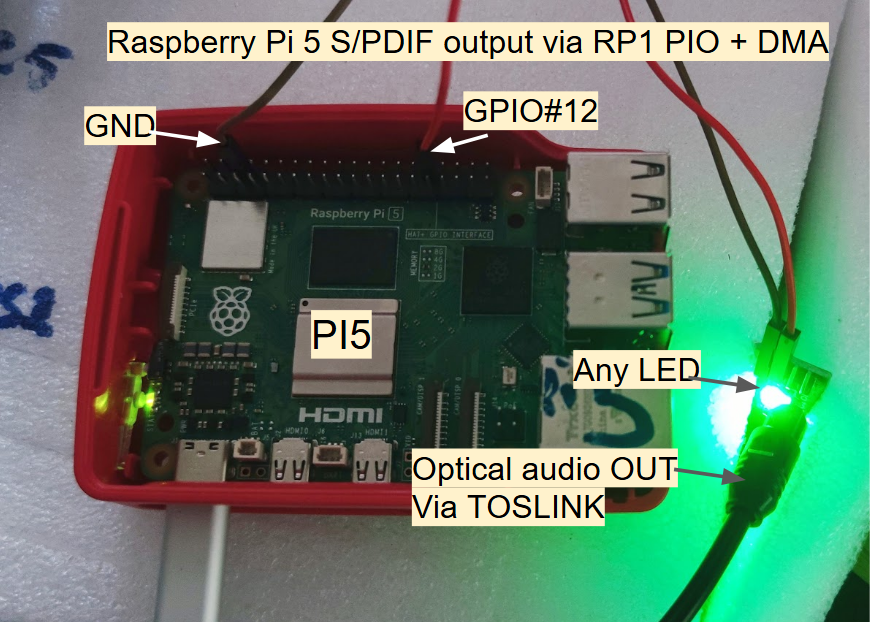
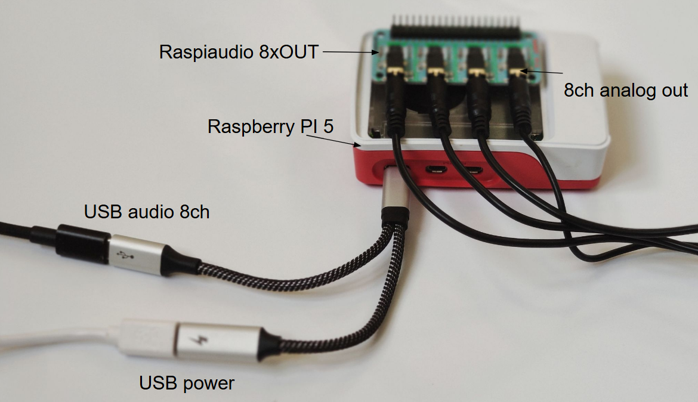

RASPIAUDIO CamillaDSP Box
Flash a Raspberry Pi 5 image, open raspiaudio.local, then choose PC USB 7.1 -> 8 analog outputs.
Open miniDSP-style audio box for Raspberry Pi 5.
Use a computer as the USB audio source, run CamillaDSP on the Raspberry Pi, and send the processed audio to RASPIAUDIO 8xOUT or 8xIN+8xOUT analog outputs.
USB audio from the computer
Windows, macOS or Linux sees one 7.1 / 8-channel / 48 kHz USB sound card.
CamillaDSP inside the Pi
Use passthrough first, then switch to crossover, PEQ, gain, delay or FIR presets.
8 analog outputs plus optional optical
Drive amplifiers from the 8 outputs, or use GPIO12 TOSLINK stereo mode.

Setup in 8 steps.
No SSH, terminal, YAML, or Linux audio setup is needed for the beginner path.
.img.xz.Use custom.http://raspiaudio.local.PC USB 7.1 -> 8 analog outputs.Choose one mode, then test audio.
The first screen shows only the recommended path. Advanced modes stay collapsed until needed.
PC USB 7.1 -> 8 analog outputs
Recommended first test. One USB 8-channel stream goes to OUT1 through OUT8.
Optical TOSLINK stereo
USB front L/R goes to the Pi 5 GPIO12 optical S/PDIF output.
Active crossover
Stereo input becomes a 3-way plus sub preset with safe gain, PEQ and delay placeholders.
Analog input test
Available on 8xIN+8xOUT boards for local ADC monitor and capture checks.
Visual troubleshooting.
The dashboard checks hardware, USB audio, CamillaDSP, analog outputs and TOSLINK. If something is wrong, use the plain-language action shown on screen.
raspiaudio.local does not openUse the Raspberry Pi IP address from your router.
Technical documentation stays on GitHub.
The public image is for normal users. The GitHub repository keeps the advanced details: CamillaDSP YAML, USB gadget setup, TOSLINK driver, active crossover presets, release validation and image builder files.
